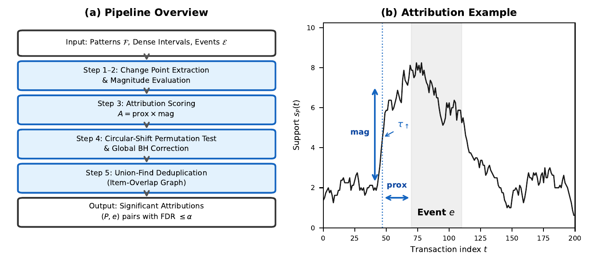
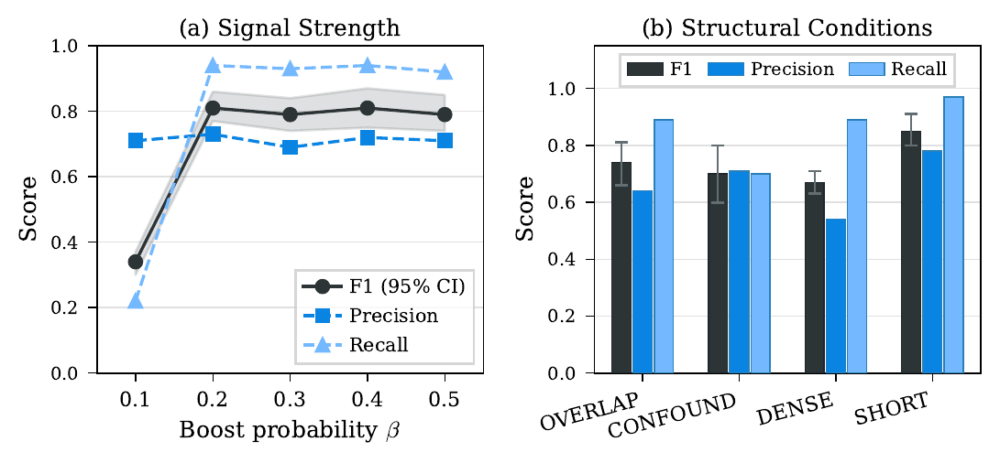
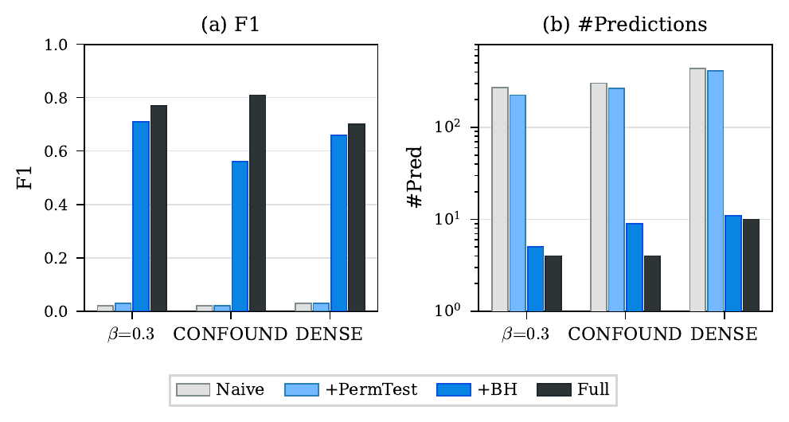
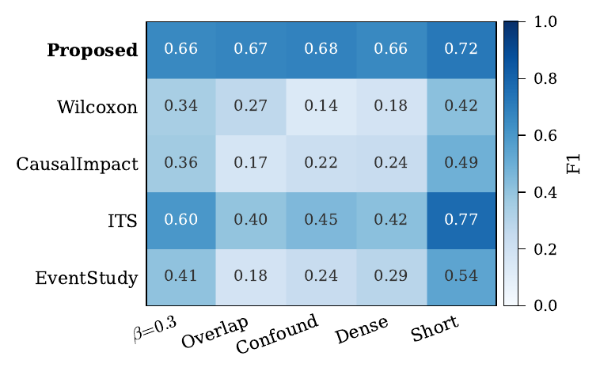

頻出パターンのサポート変動を外部イベントに統計的に帰属させる 統合フレームワーク
Apriori, FP-Growth, ECLAT といった頻出パターンマイニング手法は，トランザクションデータ中に繰り返し出現するアイテムセットを効率的に発見する。スライディングウィンドウ型手法は特定時間区間内で局所的に密集するパターンも検出できる。
しかし，これらの手法は「何が」「いつ」頻出かを同定するのみであり，「なぜ」パターンの出現頻度が変動したかを説明する機能を持たない。
実際の応用場面では，販促キャンペーン・祝日・規制変更・システム更新といった外部イベントがパターンサポートの時間的変動を駆動していることが多い。「どのイベントがどのパターンの変動を引き起こしたか」を特定できれば，キャンペーン効果の定量化，副作用の検出，システム異常の診断など，意思決定に直結する知見が得られる。
本研究は，頻出パターンマイニングと外部イベント帰属を橋渡しする統計フレームワーク「イベント帰属パイプライン」を提案する。
イベント帰属問題をFDR制御付き多重検定問題として定式化し，規模・副次パターン・時間的混同の3課題を同定。
変化点抽出→帰属スコアリング→円形シフト置換検定→グローバルBH補正→Union-Find重複排除。パターンマイニングとイベント帰属を初めて橋渡しする。
⌈l/2⌉過半数共有基準による重複排除で，統計検定だけでは解消できない副次パターンの偽陽性を除去。
合成データ8条件・アブレーション・関連手法4種との比較・実データ（Dunnhumby）への探索的適用を提供。
本研究は複数の研究分野にまたがる。以下に各分野の位置づけと本手法との差異を示す。
| 手法群 | 時系列 変化 |
イベント 帰属 |
多数 パターン |
多重 検定 |
重複 排除 |
|---|---|---|---|---|---|
| 時間的FPM（LPFIM/PFPM/LPPM） | — | — | ○ | — | — |
| Apriori-window | ○ | — | ○ | — | — |
| 変化点検出（CUSUM, BOCPD） | ○ | — | — | — | — |
| ITS / 介入分析 | ○ | ○ | — | — | — |
| イベントスタディ | ○ | ○ | — | — | — |
| CausalImpact | ○ | ○ | — | — | — |
| Wilcoxon検定 | — | ○ | — | — | — |
| 統計的FPM（LAMP/WY） | — | — | ○ | ○ | — |
| 本手法（Event Attribution Pipeline） | ○ | ○ | ○ | ○ | ○ |
Apriori は反単調性に基づく候補生成・枝刈りを確立し，FP-Growth とECLAT がそれぞれ FP-tree と縦型表現で高速化を実現した。これらの手法はグローバル頻度を対象とし，時間的な変動をモデル化しない。
PFPM・PPFPM は周期性制約を導入し，LPFIM はgapベースの閾値で時間区間内の頻出集合を検出する。LPPM は局所性と周期性を統合する。これらの手法はパターンがいつ・どの周期で頻出であるかを検出するが，変動の原因はモデル化しない。
Apriori-window はgapパラメータや周期性仮定を持たず，固定幅スライディングウィンドウ W をトランザクション列上で走査し，各位置でのローカルサポートを直接評価する。出力は各パターン P の密集区間（サポートが閾値以上を連続して満たすウィンドウ左端の極大区間）であり，本研究はこれをStep 0として採用する。
Agrawal & Psaila (1995) はルール統計量の形状クエリによるトレンド検出を，Chakrabarti+ (1998) は記述長に基づくサプライズ指標を，Liu+ (2001) は二時点間の「基本的変化」抽出を提案した。これらは変化の検出・特徴づけを行うが，外部イベントへの帰属フレームワークを持たない。
ITS（中断時系列回帰），イベント・スタディ法，CausalImpact，Wilcoxon rank-sum検定は既知の介入がアウトカムに与える影響を検定する。しかし典型的に単一または少数のアウトカム変数を対象としており，数千のパターンサポート時系列を複数のイベントに対して同時検定する設定には直接適用できない。
Webb (2007) の自己充足性・生産性基準，LAMP (Terada+ 2013) の検定可能パターン数最小化，Llinares-López+ (2015) の Tarone + Westfall-Young を組み合わせた高速有意パターンマイニング等がある。これらは二群間の頻度差を検定するが，本研究はサポートの時間的変動と外部イベントの関連を検定する点が異なる。円形シフト置換検定とグローバルBH補正により，Bonferroni補正より検出力の高いFDR制御を実現する。
各イベント e = (id, name, t_s, t_e) はイベントが有効な期間を表す時間区間 [t_s, t_e] を持つ。
位置 t を始点とするウィンドウ [t, t+W) 内で P を含むトランザクション数。T = N−W+1 個の時点からなる時系列。
パターン P とサポート閾値 θ に対して，s_P(t) ≥ θ が全ての t ∈ [s, e] で成立し，かつ両端で非密である極大連続区間 [s, e]。P の密集区間全体を I_P とする。Step 0（Apriori-window）の出力として与えられる。
密集区間 [s, e] の端点から定義される状態遷移点:
定義: 共起パターン集合 F = {P ⊆ I : |P| ≥ 2, サポート ≥ θ}，各パターンの密集区間集合 {I_P}，外部イベント集合 E，有意水準 α が与えられたとき，パターン P の密集区間 I ∈ I_P の変化点がイベント e の時間窓と統計的に有意に関連する全ての三つ組 (P, I, e) を，FDR ≤ α を保ちながら同定する。
単一アイテム（|P|=1）の頻度変動は通常の時系列分析で捕捉可能であり，共起構造の発見を目的とする本問題の対象外とする。
本稿の「帰属」は統計的時間的関連の有意性を指し，因果推論（do-calculus）ではない。交絡要因が存在する場合や複数イベントの時間窓が重複する場合，本手法の出力は帰属候補のスクリーニングとして位置づけられる（CONFOUND・OVERLAP条件での精度低下として実験的に確認）。
Σ|I_P| × |E| 個の (P, I, e) 仮説を同時に検定 → 厳格な多重検定補正が必要
アイテム i の頻度増加 → i を含む全共起パターンのサポートが連動変動 → 偽陽性の連鎖
複数イベントの時間窓が重複 → 帰属が曖昧に
Step 0としてApriori-windowがトランザクション列 D，ウィンドウサイズ W，最小サポート閾値 θ を入力としてパターン集合 F と各パターンの密集区間集合 {I_P} を出力し，これを入力としてSteps 1--5が統計的に有意なパターン–区間–イベント帰属 (P, I, e) の集合を出力する。

(a) パイプラインの全体構成。Step 0（Apriori-window）が密集区間を出力し，Steps 1--5を経て有意な帰属を出力する。(b) 帰属スコアリングの例示。
各密集区間を独立した帰属単位として扱い，[s,e] の端点から上昇変化点 s と下降変化点 e+1 を取得
交差前後 h=20 期間のレベルシフト量を計算。サポート振幅フィルタ(δ=10)で仮説数を 90%以上削減
A(P,τ,e) = prox × mag の2要素で変化点–イベント間の関連を定量化
分布自由な置換検定で p 値を算出し，全仮説にBH手続きを適用して FDR ≤ α を制御
副次パターンの連鎖的偽陽性を連結成分分析で除去。各成分でスコア最大のパターンのみ保持
各密集区間を独立した帰属単位として扱い，一つのパターンが複数の密集区間を持つ場合，各区間がそれぞれ異なるイベントへ帰属されうる。本パイプラインではサポート時系列全体を再計算せず，Step 0の密集区間を直接利用する。
各密集区間 [sᵢ, eᵢ] から：
を抽出する。変化量計算に必要な局所サポートはパターン出現リスト T_P 上の二分探索により O(log |T_P|) で求める。
T = N−W+1 とし，変化点 τ の前後 h 点の参照窓を定義する（デフォルト h = 20）。
変化量を局所平均差として定義する:
検出位置は閾値交差（密集区間の端点）で決め，変化の強さは交差前後のレベル差で評価する。瞬時差分 (s_P(τ) − s_P(τ−1)) と比較して，持続的なレベルシフトのみを捉える設計。
有意性検定前の仮説空間削減のため，2つのフィルタを適用する：
max(s_P) − min(s_P) < δ のパターンを除外。時間的変動の乏しいパターンを排除し，仮説数を90%以上削減。
変化量が閾値未満の変化点を除外。微小な揺らぎを排除。
各密集区間 I = [s_i, e_i] の変化点 τ と各イベント e に対して，時間的関連を定量化する帰属スコアを計算する。
d(τ,e) = min(|τ−t_s|, |τ−t_e|)
変化点からイベント境界までの最小距離に基づく指数カーネル。σ で減衰速度を制御（デフォルト σ = W = 50）。
ベースラインサポートが高いパターンほど絶対変化量が大きくなるバイアスを，平方根で除すことにより緩和。実世界のトランザクションデータではアイテム頻度がZipf分布に従うケースが多く，この正規化が特に有効。アブレーション実験でproximity と相補的に機能することを実証。
密集区間 I のイベント e に対する観測スコアは，その区間の変化点（上昇・下降の最大2点）にわたる帰属スコアの総和 A_obs(P, I, e) = Σ_τ∈C_I A(P, τ, e) とする。
帰属スコア A は候補のランキング用指標であり，帰属の最終判定は Step 4 の置換検定が行う。乗算構成 prox × mag はいずれかの構成要素が0に近ければスコア全体が0となる排他的フィルタとして機能し，EX2が両成分の補完性を実証する。
帰無仮説 H₀: 「密集区間 I の変化点の位置はイベント時刻と無関係である」のもと，B 回（デフォルト 5,000）の置換を実行する。各置換 b では，ランダムなオフセット δ_b で全イベントの時刻を一斉に円形シフトする。
各置換に対してスコアを再計算し，未補正 p 値を求める:
帰無仮説 H0 のもとでは，観測スコア A_obs と B 個の置換スコアは交換可能（exchangeable）である。したがって p 値は {1/(B+1), 2/(B+1), …, 1} 上の離散一様分布に従い，任意の水準 α で第一種過誤率が α 以下に制御される。
特徴: 分布自由（サポート時系列の分布を仮定しない），自己相関構造を保存，全イベントの相対関係を維持
M = Σ|I_P| × |E| 個の仮説（(P, I, e) 三つ組）全体に対して BH 手続きをグローバルに適用する。
BH 手続きは FDR を水準 α 以下に保ちつつ，Bonferroni 補正と比べてより多くの真の帰属を検出できる。
サポート振幅フィルタ(δ=10)が仮説数を90%以上削減することで，BH補正による検出力低下を抑制する。重複排除が第2段フィルタとして機能し，副次パターンの偽陽性を除去する。
外部イベントがアイテム i の出現頻度を増加させると，i を含む全てのパターンのサポートが相関して増加する。例えば，真のパターン {1001, 1002} の場合，{78, 1001}, {155, 1002} 等の副次パターンも共有アイテム経由でサポートが連動変動し，置換検定でも有意と判定されてしまう。
統計検定だけでは解消できない: 副次パターンも実際にサポートが変動しているため。
独立出現・加算ブーストの簡約モデルを仮定する。真のパターン P*（長さ l，全アイテムがブースト確率 β > 0 で増加）と s 個のアイテムを共有する副次パターン P'（残り l−s 個は非ブースト）に対して，magnitude(τ, P*) > magnitude(τ, P') が成立する。さらに s ≥ ⌈l/2⌉ のとき両者は過半数共有グラフの同一連結成分に属し，スコア最大の P* が保持されて P' は除去される。
計算量は O(R × k)（有意結果数 × パターン最大長）であり，置換検定に比して無視可能。
| Step | 処理内容 | 計算量 |
|---|---|---|
| 1–2 | 変化点抽出 + 局所サポート計算 | O(|F| · C̄ · h · log n) |
| 3–4 | 帰属スコアリング + 置換検定 | O(|F'| · |E| · B · C) |
| 5 | 重複排除 | O(R · k) |
C̄: 平均密集区間数, h: レベルウィンドウ幅(=20), |F'|: フィルタ後パターン数, B: 置換回数(=5,000), C: 平均変化点数, R: 有意結果数, k: パターン最大長。サポート振幅フィルタが |F'| を 90%以上削減するため，Step 3–4 は大規模パターン集合でも効率的。
評価: (P, I, E) 三つ組レベルの P/R/F1 + FAR
| ウィンドウサイズ W | 50 |
| 最小サポート θ | 3 |
| 最大パターン長 L | 制約なし |
| 変化点検出法 | 閾値交差 |
| 近接度 σ | W = 50 |
| 置換回数 B | 5,000 |
| 有意水準 α | 0.10 |
| 最小サポート振幅 δ | 10 |
| 変化量正規化 | 平方根 |
| 補正方法 | BH |
| 重複排除 | 有効 |
| 実験 | 目的 | 条件 | Seeds |
|---|---|---|---|
| EX1 | コア帰属精度 | β ∈ {0.1,0.2,0.3,0.5} + 構造条件（OVERLAP/CONFOUND/DENSE/SHORT） | 20 |
| EX2 | アブレーション | スコア構成要素除去（prox/mag）× 2シナリオ + パイプラインステップ比較 | 5 |
| EX3 | 関連手法比較 | Wilcoxon / CausalImpact / ITS / EventStudy とのStep差分比較 | 5 |
| EX4 | 実データ検証 | Dunnhumby（276K txn, 大規模販促5キャンペーン） | 1 |
| β | Prec | Recall | F1 | 95% CI |
|---|---|---|---|---|
| 0.1 | 0.71 | 0.22 | 0.34 | [0.30, 0.37] |
| 0.2 | 0.73 | 0.94 | 0.81 | [0.77, 0.86] |
| 0.3 | 0.69 | 0.93 | 0.79 | [0.74, 0.84] |
| 0.4 | 0.72 | 0.94 | 0.81 | [0.75, 0.87] |
| 0.5 | 0.71 | 0.92 | 0.79 | [0.74, 0.85] |
β=0.1 はL=2語彙内パターンが検出限界だがL=3,4パターンは安定検出される。β≥0.2 でRecall≥0.92，F1≥0.78 を達成。
| 条件 | Prec | Recall | F1 | 95% CI |
|---|---|---|---|---|
| SHORT | 0.78 | 0.97 | 0.85 | [0.80, 0.91] |
| OVERLAP | 0.64 | 0.89 | 0.74 | [0.66, 0.81] |
| CONFOUND | 0.71 | 0.70 | 0.70 | [0.60, 0.80] |
| DENSE | 0.54 | 0.89 | 0.67 | [0.63, 0.71] |
植え込み信号なしの帰無データで100 seed実行。93 seedで偽発見数0，7 seedで1件，2件以上は0。
≤ α = 0.10 — FDR制御を経験的に達成

EX1結果（20 seeds平均・95%CI）。(a) 信号強度: β≥0.2でF1≥0.78。(b) 構造条件: 全条件でF1≥0.67。
| 構成 | Scenario A (prox必要) | Scenario B (mag必要) |
|---|---|---|
| Full (prox×mag) | 1.00 | 0.46 |
| mag のみ（prox除去） | 0.00 | 0.00 |
| prox のみ（mag除去） | 1.00 | 0.19 |
mag のみ（prox除去）は時間的対応付け情報を持たず両シナリオでF1=0.00に崩壊。prox のみはScenario Aで1.00だがScenario B（大小ブースト弁別）で0.19に低下。Full構成が両要素の相補性により最高精度を達成。
Scenario A での比較
| 条件 | 手法 | F1 | #Pred |
|---|---|---|---|
| β=0.3 | Naive | 0.02 | 270 |
| +PermTest | 0.03 | 224 | |
| +BH | 0.71 | 5 | |
| Full | 0.77 | 4 | |
| CONFOUND | Naive | 0.02 | 303 |
| +PermTest | 0.02 | 265 | |
| +BH | 0.56 | 9 | |
| Full | 0.81 | 4 | |
| DENSE | Naive | 0.03 | 438 |
| +PermTest | 0.03 | 413 | |
| +BH | 0.66 | 11 | |
| Full | 0.70 | 10 |

EX2b: パイプラインステップの段階的追加。(a) F1: BH補正と重複排除で大幅改善。(b) #Predictions: 各ステップが出力数を段階的に削減。
Step 0（Apriori-window），BH補正，Union-Find重複排除（Step 5）を全手法で共有し，帰属判定コア（Steps 1・3・4）のみを以下の4手法で置き換える。
| 手法 | β=0.3 | OVERLAP | CONFOUND | DENSE | SHORT |
|---|---|---|---|---|---|
| 提案手法 | 0.66 | 0.67 | 0.68 | 0.66 | 0.72 |
| ITS | 0.60 | 0.40 | 0.45 | 0.42 | 0.77 |
| EventStudy | 0.41 | 0.18 | 0.24 | 0.29 | 0.54 |
| CausalImpact | 0.36 | 0.17 | 0.22 | 0.24 | 0.49 |
| Wilcoxon | 0.34 | 0.27 | 0.14 | 0.18 | 0.42 |
5 seeds平均F1，Zipf-1.0，√正規化

EX3: 関連手法との比較（5 seeds平均F1）。提案手法は全5条件で最高または同等のF1を達成。CONFOUND条件での優位性が最も顕著。
Dunnhumby "The Complete Journey" データセット（276,484 トランザクション）。集団レベルのサポート変動を検出対象とし，クーポン対象商品数3,000件以上の大規模販促キャンペーン5件（C8, C13, C18, C26, C30）を外部イベントとして使用。W=300, θ=5, B=5,000, α=0.10。
| 指標 | 値 |
|---|---|
| トランザクション数 | 276,484 |
| パターン数（|P|≥2） | 896 |
| キャンペーン数 | 5 |
| 有意帰属数（重複排除後） | 15 |
| キャンペーンあたり平均帰属数 | 3.0 |
本稿では，頻出パターンのサポート時系列における変動を外部イベントに統計的に帰属させるイベント帰属パイプラインを提案した。